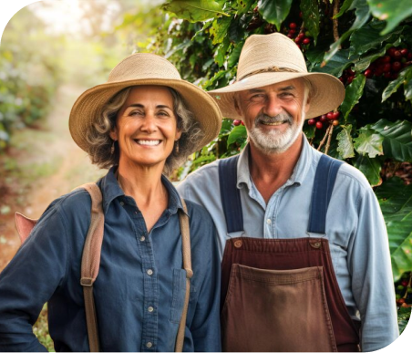
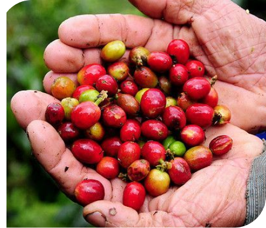

Somos Olavo e Maria, um casal apaixonado pelo café e pela terra que nos viu crescer. Nossas histórias se entrelaçaram nas fazendas de café que têm sido parte de nossa família há gerações. O café corre em nossas veias, é a batida do nosso coração, e é o legado que desejamos compartilhar com você.
Olavo é a personificação das tradições cafeeiras de Minas Gerais. Ele cresceu entre as plantações, aprendendo com seus antepassados a arte de cultivar café com paixão e respeito pela terra. Sua experiência e conhecimento são nossos guias na busca constante pela excelência e qualidade.
Maria é a alma do Raiz Café. Ela é a luz que brilha nas manhãs mineiras, preparando o café que todos nós amamos. Sua dedicação à comunidade local, sua paixão pela culinária mineira e seu toque especial transformam cada xícara de café em uma experiência única.
O Raiz Café é o nosso sonho ganhando vida. É o lugar onde nossas tradições se encontram com as inovações do setor. Cada grão de café que cultivamos, colhemos e preparamos é uma homenagem à nossa herança e à nossa visão de um café verdadeiramente excepcional. Nossas xícaras de café carregam o sabor de uma jornada de amor pela terra, dedicação à qualidade e respeito às tradições. Cada gole é uma conexão com Diamantina, uma cidade que capturou nossos corações e que temos o privilégio de chamar de lar. Seja bem-vindo a esta jornada conosco. Estamos ansiosos para compartilhar nossa paixão e a riqueza do café de Minas Gerais com você. Juntos, celebramos a história e o sabor que são o coração do Raiz Café.
Obrigado por nos acompanhar nesta viagem.